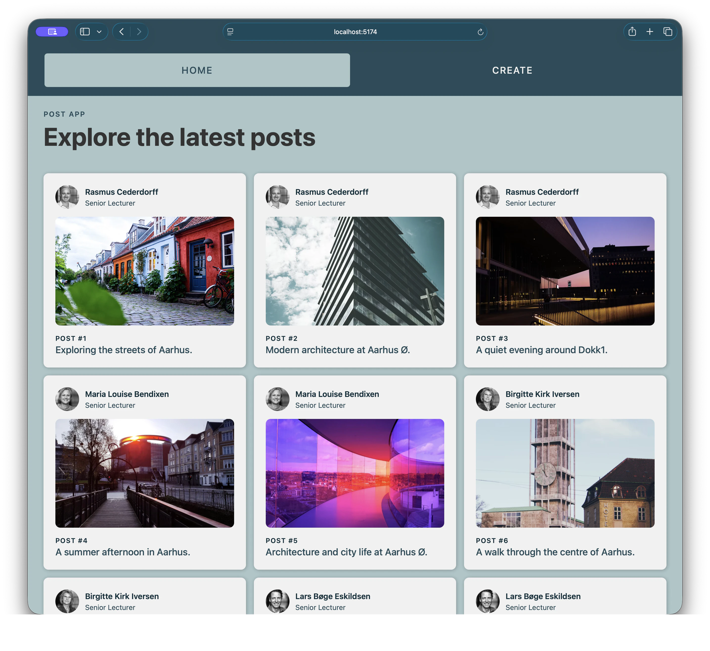
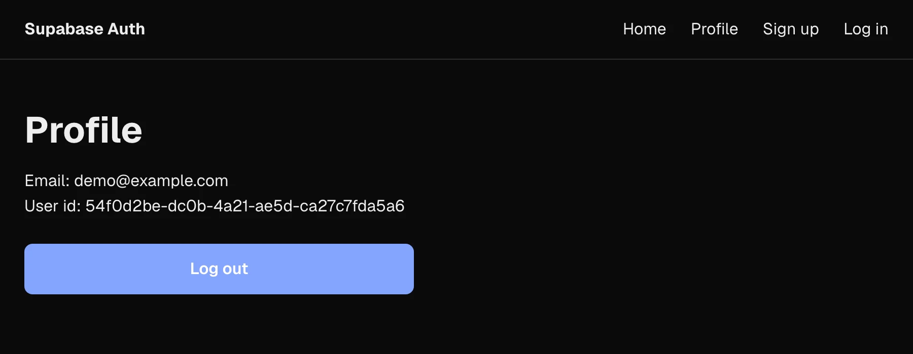
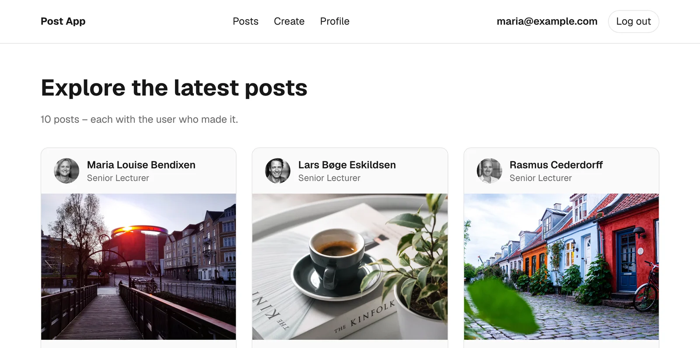
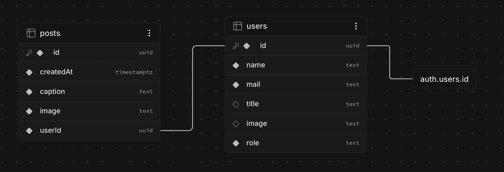
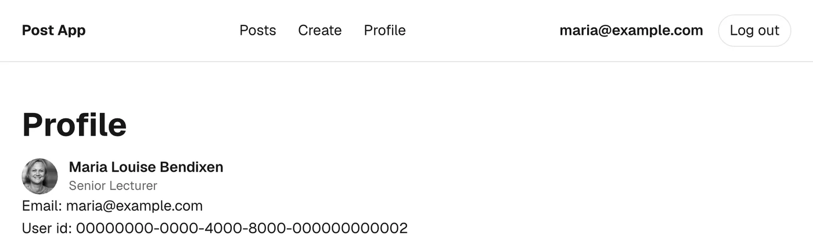
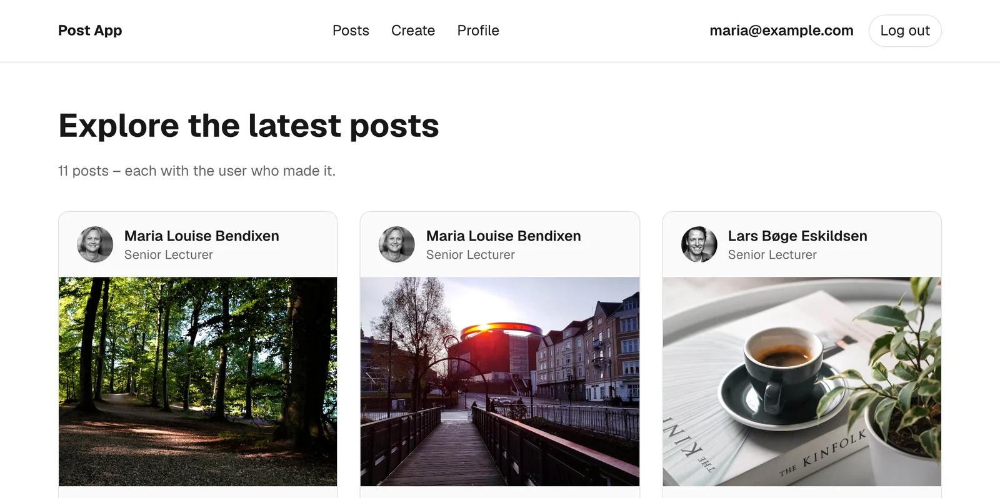
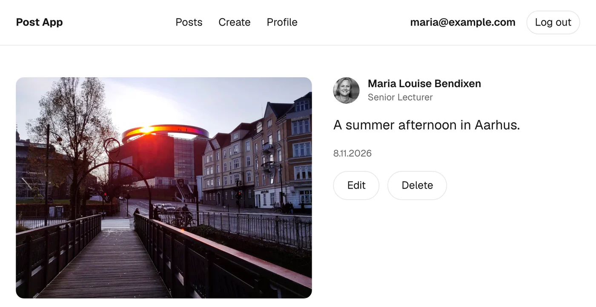
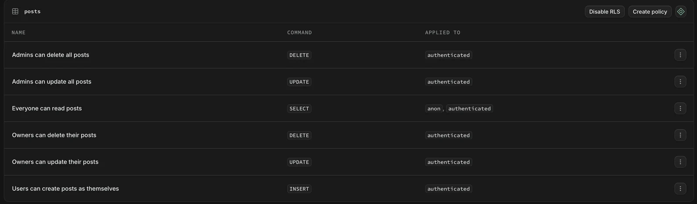
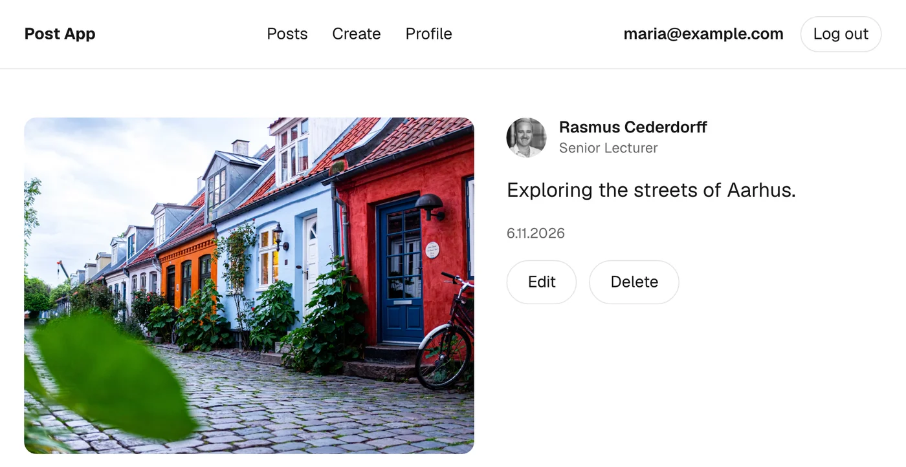

Login
iduuid
emailtext
passwordkrypteret
Hvorfor Next.js · user management, roller og Row Level Security
RACE
DigStudent
Mit første post som mig selv
EditDelete
profile.id === post.userId
role
admin
Del 1Oplæg og demo
Del 2Jeres projekt
fetch til SDK · hvem er logget ind? · userId
role i users · Edit og Delete for admins
Du har bygget i Next.js i to uger. Hvad har du egentlig fået forærende?
app/ bliver til routes
useState og useEffect i hver komponentloading.js
error.js og not-found.js
localStorage — kun browseren kender denSessionen i en cookie, som serveren kan læse
metadata
Prisen: frameworkets regler. Filnavne, mapper og grænsen mellem server og client er bestemt på forhånd — til gengæld ser alle Next.js-projekter ens ud.
app/
layout.js
error.js
loading.js
not-found.js
page.jslayout.js · rammenHeader og footer bliver stående, når siden skifter.
error.js · noget fejlerFanger fejlen inde i layoutet — headeren står stadig.
loading.js · data hentesVises med det samme, mens page.js venter.
not-found.js · findes ikkeNår URL'en ikke matcher, eller du kalder notFound().
Den nærmeste vinder. Filerne gælder for mappen og alle undermapper — så
/posts/[id] kan få sin egen loading.js, mens resten af appen bruger den fælles.
notFound()not-found.js · 404Post'et findes ikke
throw new Error()error.jsSupabase svarer ikke
redirect("/login")en anden routeDu er ikke logget ind
redirect(`/posts/${id}`)en anden routeDu må ikke rette post'et
I dag handler det om adgang: Hvem må se siden — og hvem må ændre data? Må du ikke,
sender redirect() dig videre.
Login fra 30. oktober og posts fra Post App — nu hænger de sammen.



/signupSamme id i Authentication og i usersuserId er mig/update til URL'en på et af Rasmus' postsSiden sender hende tilbage til post'etPATCH uden loginSvaret er [] — post'et er uændretposts, og send igenPost'et hedder nu Hacked. Appen er ikke den eneste vej til databasen.env.local · id fra URL'en
PATCH …/rest/v1/posts?id=eq.<post-id>
apikey: sb_publishable_…
Prefer: return=representation
{ "caption": "Hacked" }role = admin på min række/profileFormularen har navn, titel og billede — ikke rolleuser — knapperne kun på sine egne postsusersRelationen kender I fra Post App. Det nye er koblingen til login'et.
userId — altid den, der er logget ind, når post'et bliver oprettet.iduuid
emailtext
passwordkrypteret
idsamme som login
name · title · imagetext
roleuser | admin
userId → id
iduuid
caption · imagetext
userIdden, der er logget ind
Det kender I fra Post App: Et post er lavet af én user. Det nye: Den, der er logget
ind, er en række i users — med samme id.

posts.userId → users.id → auth.users.id · samme relation som i Post App — plus login'etposts.userId → users · navn, titel og billede på hvert kort — samme relation som i Post Appfetch
const query =
"?select=*,user:users(*)&order=createdAt.desc";
const response = await fetch(`${url}/posts${query}`, {
headers: { apikey: key }
});
const posts = await response.json();const supabase = await createClient();
const { data: posts } = await supabase
.from("posts")
.select("*, user:users(*)")
.order("createdAt", { ascending: false });/posts.from("posts")?select=*,user:users(*).select("*, user:users(*)")&order=createdAt.desc.order("createdAt", { ascending: false })headers: { apikey }createClient() · key fra .env.local, login fra cookienawait response.json(){ data } · allerede JSONfetch — bare korterefetchStartprojektet · Supabase SDK
GET …/posts?select=*.from("posts").select("*")POST …/posts.from("posts").insert(post)PATCH …/posts?id=eq.123.update(post).eq("id", id)DELETE …/posts?id=eq.123.delete().eq("id", id)
SDK'et sender login'et med. Så kan databasen se, hvem du er. Over hvert kald i startprojektet står
den fetch, du kender.
app/signup/page.js · Server Action
// 1. Create the login
const { data, error } = await supabase.auth
.signUp({ email, password });
// 2. Create your row in users
await supabase.from("users").insert({
id: data.user.id,
name: name,
mail: email
});signUp()Opretter login'et i Supabase — som 30. oktober.
data.user.idLogin'ets id. Det bliver også dit id i users.
insert()Et helt almindeligt insert — ligesom når du opretter et post.
Samme id to stederSå kan appen altid finde din række i users.
userslib/auth.js
export async function getCurrentProfile() {
const user = await getCurrentUser();
if (!user) {
return null;
}
const supabase = await createClient();
const { data } = await supabase
.from("users")
.select("*")
.eq("id", user.sub)
.maybeSingle();
return data;
}getCurrentUser()Login'et fra 30. oktober. Id'et står i user.sub.
.eq("id", user.sub)Samme id i users — et helt almindeligt select.
profileDin række: id, name, mail, title, image og role.
Brug den overaltResten af dagen spørger vi getCurrentProfile(): Hvem er logget ind?
/profile
getCurrentProfile() · Marias række i usersid…0002
emailmaria@example.com
id…0002
nameMaria Louise Bendixen
roleuser
Samme id i login'et og i users. Derfor kan appen altid finde rækken for den, der er
logget ind.
userId er den, der er logget indapp/create/page.js · Server Action
async function createPost(formData) {
"use server";
const profile = await getCurrentProfile();
if (!profile) {
redirect("/login");
}
const supabase = await createClient();
await supabase.from("posts").insert({
caption: formData.get("caption"),
image: formData.get("image"),
userId: profile.id
});
redirect("/");
}Væk med CURRENT_USER_IDDet faste id fra Post App bliver erstattet af den, der er logget ind.
getCurrentProfile() igenEn Server Action er sin egen request. Spørg igen — stol ikke på siden.
profile.idSamme relation som i Post App: posts.userId peger på users.id.
Aldrig fra formularenEt skjult felt kan alle ændre. profile.id kommer fra login'et i cookien.

userId: profile.id → Marias navn og billedeDet, brugeren ikke må, skal afvises på serveren — og i databasen.
Kun ejeren ser Edit og Delete.
{isOwner && (…)}
God oplevelse — ingen beskyttelse
Den, der ikke ejer post'et, bliver sendt væk.
if (profile?.id !== post.userId)
Beskytter appen
Gælder for alle requests — også dem uden om appen.
Owners can delete their posts
Beskytter data
30. oktober beskyttede vi siden. I dag beskytter vi data.

isOwner er true · Edit og DeleteisOwner er false · ingen knapper
Og /update på Rasmus' post? Siden sender Maria tilbage — tjekket ligger også på serveren.
app/posts/[id]/page.js · knapperne
const profile = await getCurrentProfile();
const isOwner = profile?.id === post.userId;
{isOwner && (
<form action={deletePost}>
<Link href={`/posts/${post.id}/update`}>
Edit
</Link>
<DeleteButton />
</form>
)}deletePost · og øverst på update-siden
async function deletePost() {
"use server";
const profile = await getCurrentProfile();
if (profile?.id !== post.userId) {
redirect(`/posts/${id}`);
}
// … delete?.undefined i stedet for en fejl, når ingen er logget ind og profile er null.POST-request, som alle kan sende — også uden at se knappen.https://<projekt>.supabase.co/rest/v1/posts?id=eq.c7b81561-…
Send
Headers
apikey: sb_publishable_…
Prefer: return=representationBody · JSON
{ "caption": "Hacked" }[
{
"id": "c7b81561-…",
"caption": "Hacked",
"image": "https://images.unsplash…",
"userId": "…0001"
}
][]Den publishable key er offentlig. Alle kan sende requesten — kun reglerne i databasen kan sige nej.

Reglerne ligger klarsetup.sql har lavet dem. Du skal ikke skrive dem.
PolicyÉn regel for én handling — læs, opret, ret eller slet.
Enable RLSÉt klik pr. tabel. Først nu gælder reglerne.
For alle requestsFra appen, fra Thunder Client — og fra alle med din publishable key.
Tabel · handlingIkke logget indLogget indReglen
posts · læs✓✓Alle
posts · opret✗✓Kun med dig selv som userId
posts · ret✗✓Ejeren — eller en admin
posts · slet✗✓Ejeren — eller en admin
users · læs✓✓Alle
users · opret og ret✗✓Kun din egen række
Derfor må den publishable key ligge i browseren, når RLS er slået til. En
sb_secret_-key springer RLS over — den må aldrig ligge i browseren eller på GitHub.
user elleradmin?En admin må mere — men ingen kan gøre sig selv til admin.
users, som appen og reglerne kan spørge på: Er du admin?usersnameMaria Louise Bendixen
titleSenior Lecturer
roleadmin
app/posts/[id]/page.js
const profile = await getCurrentProfile();
const isOwner = profile?.id === post.userId;
const isAdmin = profile?.role === "admin";
const canEdit = isOwner || isAdmin;
{canEdit && (
<form action={deletePost}>
<Link …>Edit</Link>
<DeleteButton />
</form>
)}
Rollen kan kun ændres i Table Editor. setup.sql lader brugerne
rette name, title og image — ikke role.
user — og som adminrole: user · ikke ejeren · ingen knapper
role: admin · canEdit er true · Edit og Delete
Samme side, samme post. Kun role i Marias række i users er ændret.
deletePost · updatePost · øverst på update-siden
const profile = await getCurrentProfile();
if (
profile?.id !== post.userId &&
profile?.role !== "admin"
) {
redirect(`/posts/${id}`);
}Samme tre stederTjekket fra kun ejeren — nu med en undtagelse for admins.
&&Du bliver sendt væk, hvis du hverken er ejeren eller admin.
profile.roleKommer fra din række i users — aldrig fra formularen.
Databasen siger det sammeAdmins can update all posts og Admins can delete all posts.
Fortsæt med det, I er i gang med. Vejledning i grupperne undervejs.
Har jeres data en ejer? Hvem må se og ændre hvad? Det kan I også bruge i afsnittet om it-sikkerhed.
Guiden tager jer trin for trin gennem det hele i et startprojekt — med en løsning pr. opgave.
2Posts får en ejerOpgaveLøsning
3Kun ejeren kan rette og sletteOpgaveLøsning
4Beskyt databasenOpgave
Ny bruger mangler i users? Tjek insert efter signUp.
Intet sker, når du sletter? RLS afviser uden fejl.